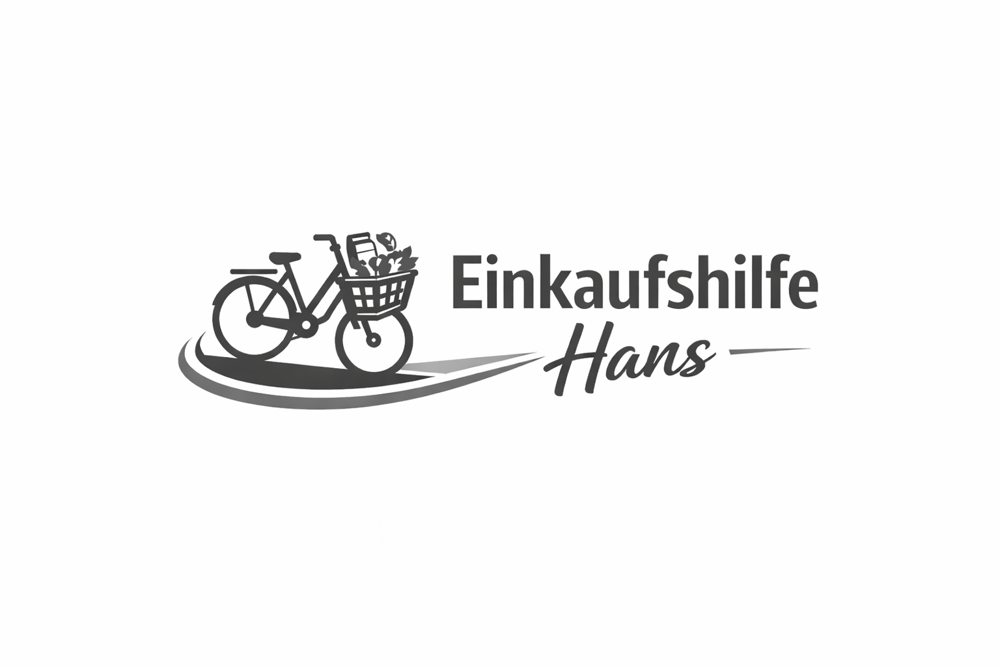

Einkaufshilfe Hans ist ein privates, kostenloses Unterstützungsangebot in Weinsberg. Kleine Besorgungen übernehme ich mit dem Fahrrad. Bei größeren Einkäufen begleite ich Sie und unterstütze beim Finden der Produkte sowie beim Bezahlen.
Das Angebot ist ausschließlich in Weinsberg verfügbar.
Samstag & Sonntag: 9:00 – 21:00 Uhr
Montag, Dienstag & Donnerstag: 16:20 – 20:00 Uhr
Mittwoch & Freitag: 13:30 – 20:00 Uhr
Die Einkaufshilfe erfolgt freiwillig und unentgeltlich. Eine Haftung wird – außer bei vorsätzlichem oder grob fahrlässigem Verhalten – ausgeschlossen. Für gekaufte Waren gelten ausschließlich die Bedingungen des jeweiligen Geschäfts.
Datenschutz: Ihre Kontaktdaten werden ausschließlich zur Kommunikation im Rahmen der Einkaufshilfe verwendet und nicht an Dritte weitergegeben.